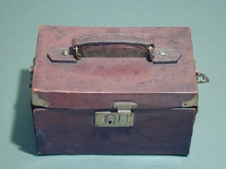
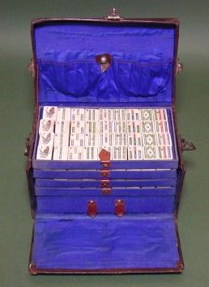
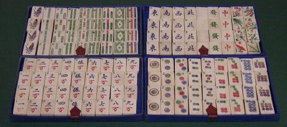
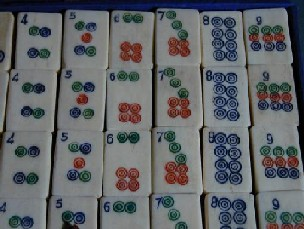
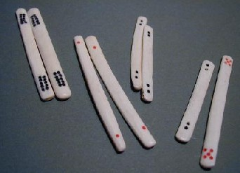

Tile colection 珍奇牌。
（６）旅行用牌
昭和初期に中国で盛んに製造された牛骨製/旅行用牌。持ち運びに便利なように頑丈な皮ケースに入っており、頑丈な留め金がついている。蓋がキチンとしまっていないみたいであるが、これは半開き状態で撮影したため。

万子が略万、索子全体が棒状であることと１索の形から、1920年代初期、アメリカへの輸出用に上海あたりで製造された牌と思われる。

アメリカ輸出用に製造された牌は、すべてインデックスがついている。もっとも初期の牌はインデックスの牌は、牌の彫り込みが完了してからインデックスがつけられていた。しかしこの牌の９筒や４筒はインデックスのために筒子がインデックスに押しやられた形になっている。
これは最初からインデックスを入れることを想定して牌面の彫り込みが行われたため。これは、この牌がアメリカ・イギリスなどへ輸出が盛んになってから製造されたものであることの証明である。

点棒の模様配置は、初期のモノの特徴。ただし今で言う百点棒の文様から、初期のうちの後期のものということがわかる。
